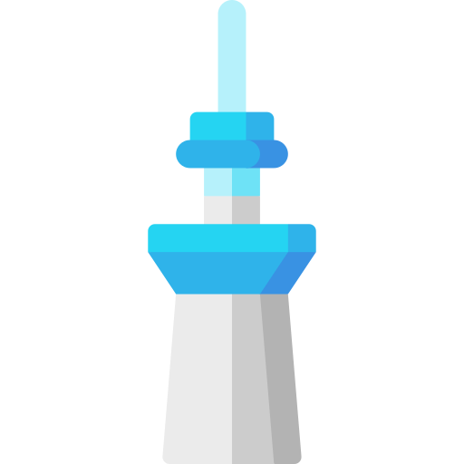
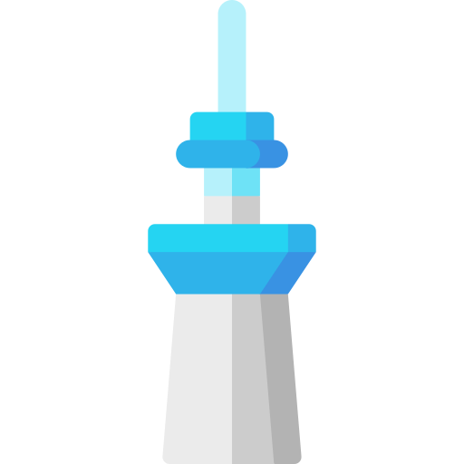

오도리 공원(大通公園おおどおりこうえん)은 일본 홋카이도 삿포로시 주오구에 있는 공원이다. 일본의 길 100선, 일본의 도시공원 100선, 도시경관 100선, 일본의 역사 공원 100선에 선정되었다.삿포로 중심부에 위치하고 있으며, 동서 약 1.5km, 면적 약 7.8ha의 공원이다. 삿포로의 풍치지구, 경관 계획 중점 구역으로 지정되어 있다. 잔디밭과 화단으로 정비되어 있으며, 라일락, 느릅나무, 느티나무를 비롯한 92종, 약 4,700그루의 나무가 있다. 또한, 오도리 공원에서는 삿포로 눈축제, 삿포로 라일락 축제, YOSAKOI 소란 축제, 삿포로 여름 축제, 삿포로 어텀 페스트, 삿포로 화이트 일루미네이션 등 각종 축제나 행사가 개최된다.


2인승 리프트를 타고 도달하는 해발 307m의 정상에서 삿포로의 거리풍경이 한눈에 내려다보이는 산꼭대기 전망대. 1972년 올림픽 삿포로 대회 무대가 된 점프대 '오오쿠라산 샹체'도 볼 수 있어 점프 경기의 현장감을 느낄 수 있습니다. 점프대에서는 현재도 월드컵 등 국제 대회와 수많은 국내 대회가 개최되고 있습니다. 겨울 스포츠의 역사를 간직한 '삿포로 올림픽 박물관'도 빼놓을 수 없습니다!
삿포로 맥주의 발상지인 삿포로에 1987년 개관된 일본 유일의 맥주 박물관이다. 건물은 삿포로 제당회사 공장으로서 1890년에 건축된 후 1905년 삿포로 맥주의 전신인 삿포로맥주 제맥소로 개수된 건물로, 홋카이도 구청사와 더불어 메이지 시대의 모습을 간직한 귀중한 문화유산이기도 하다. 1876년 개척사 맥주양조소 때부터의 맥주제조의 역사, 맥주와 관련된 자료, 홋카이도 개척 역사와의 관계 등을 다양한 전시물과 영상 자료로 소개하고 있다. 박물관 근처의 삿포로 제2공장에서 2003년까지 실제로 사용한 직경 6.1미터의 동솥(자비솥)을 전시하고 있다.